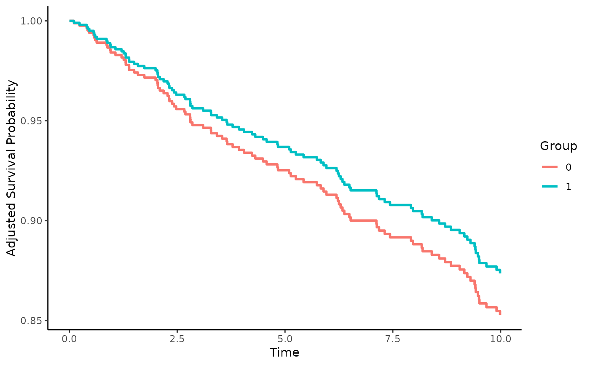

Instrumental Variable based Survival Curve Estimation using the Two Stage Residual Inclusion method with a Frailty Term (2SRI-F)
surv_iv_2SRIF.RdThis page explains the details of estimating adjusted survival curves using the 2SRI-F instrumental variable method introduced by Martinez-Camblor et al. (2021) for single event time-to-event data (method="iv_2SRIF" in the adjustedsurv function). All regular arguments of the adjustedsurv function can be used. Additionally, the adjust_vars argument and the instrument argument have to be specified in the adjustedsurv call. Further arguments specific to this method are listed below.
Arguments
- adjust_vars
[required] A character vector of column names specifying observed variables to be used as covariates in both the linear regression model and the Cox model. Set to
NULLto use no additional observed covariates. See details and examples.- instrument
[required] A single character string specifying the instrumental variable. This variable should be numeric and fulfill all conditions required to be called a instrumental variable. See details and references for more information.
- frailty_dist
A single character string specifying the distribution that should be used for the frailty term (internally passed to the
distributionargument of thefrailtyfunction). Defaults to"gaussian"and should usually be kept at this value.- return_models
Either
TRUE(default) orFALSE, indicating whether the output object should also contain the two models used for the estimation of the suvival curves.
Details
Type of Adjustment: Allows adjustment for observed confounders through the Cox model and adjustment for unmeasured confounders using the instrumental variable approach.
Doubly-Robust: Estimates are not Doubly-Robust.
Categorical groups: Only binary treatments are allowed. The column specified by
variablemust be a factor variable with exactly two levels.Approximate Variance: Calculations to approximate the variance and confidence intervals are not available. Bootstrapping can still be used to estimate the confidence intervals (see
?adjustedsurv).Allowed Time Values: Allows both continuous and integer survival times.
Bounded Estimates: Estimates are guaranteed to be bounded in the 0 to 1 probability range.
Monotone Function: Estimates are guaranteed to be monotone.
Dependencies: None.
An instrument is a variable that directly influences only the variable of interest and has no effect on the survival probability or any known confounders. Essentially, it is a variable that determines whether a person receives a specific level of the variable, without influencing anything else. Through some clever calculations, such variables may be used to adjust for confounding factors. A nice non-technical explanation of the general methodology of instrumental variables is given by Iwashyna and Kennedy (2013). More specific explanations of the method used here are given in Martinez-Camblor et al. (2021).
Unlike all other methods included in this package, the instrumental variable approach allows adjustment for unmeasured confounding, while simultaneously allowing adjustment for observed confounders. This is the main advantage of this method. It is, however, only usable if there exists a variable that can be reasonably used as an instrumental variable. Conditions for what constitutes such a variable and more details on the estimation process can be found in the original article by Martinez-Camblor et al. (2021).
Note that this method does not target the average treatment effect (ATE), but instead targets the local average treatment effect (LATE), also sometimes called complier average causal effect (CACE) as described in Lee et al. (2023). This is the main reason this estimator was not included in the simulation study performed by the author of this package (Denz et al. 2022). It is therefore currently not easy to judge how well this method performs in comparison with other methods.
Value
If return_models is set to TRUE, it adds the following objects to the adjustedsurv function:
lm_mod: The linear regression model used to obtain the residuals in the first stage of the estimation process.cox_mod: The Cox model used in the second stage of the estimation process.
References
Pablo Martínez-Camblor, Todd A. MacKenzie, Douglas O. Staiger, Phillip P. Goodney, and Jamer O'Malley (2021). "Summarizing Causal Differences in Survival Curves in the Presence of Unmeasured Confounding". In: The International Journal of Biostatistics 17.2, pp. 223-240
Youjin Lee, Edward H. Kennedy, and Nandita Mitra (2023). "Doubly Robust Nonparametric Instrumental Variable Estimators for Survival Outcomes". In: Biostatistics 24.2, pp. 518-537
Robin Denz, Renate Klaaßen-Mielke, and Nina Timmesfeld (2023). "A Comparison of Different Methods to Adjust Survival Curves for Confounders". In: Statistics in Medicine 42.10, pp. 1461-1479
Theodore J. Iwashyna and Edward H. Kennedy (2013). "Instrumental Variable Analyses: Exploiting Natural Randomness to Understand Causal Mechanisms". In: Annals of the American Thoracic Society 10.3, pp. 255-260
Author
Robin Denz re-factored and adapted code from the online supplementary of the original article by Martinez-Camblor et al. (2021) to implement this method.
Examples
library(adjustedCurves)
library(survival)
set.seed(42)
## This example has been taken from the online supplement of the original
## article by Martinez-Camblor et al. (2021)
# generate some data
n <- 1000
t <- seq(0, 10, 0.01)
bu <- log(2)
hr <- 2
v <- 2
a <- 1
U <- stats::rnorm(n)
Z <- stats::rnorm(n)
W <- stats::rnorm(n)
e <- stats::rnorm(n)
X0 <- (U + Z + a*W + (v - a^2)^0.5*e >= 0)
L0 <- Z + bu*U
L1 <- log(hr) + Z + bu*U
T <- stats::rexp(n, 0.005)
T0 <- T/exp(L0)
T1 <- T/exp(L1)
censor <- stats::rexp(n, 0.05)
time1 <- pmin(ifelse(X0==1,T1,T0), censor)
status1 <- 1-(censor==time1)
time <- pmin(time1, 10)
status <- ifelse(time1 > 10, 0, status1)
dt <- as.data.frame(cbind(time, status, X0, Z, W))
dt$X0 <- factor(dt$X0)
# calculate adjusted survival curves
adjsurv <- adjustedsurv(data=dt,
variable="X0",
ev_time="time",
event="status",
method="iv_2SRIF",
adjust_vars="Z",
instrument="W")
# plot the curves
plot(adjsurv)
